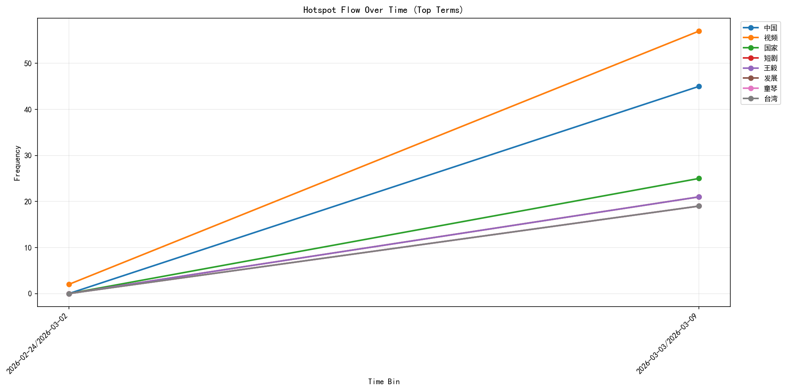
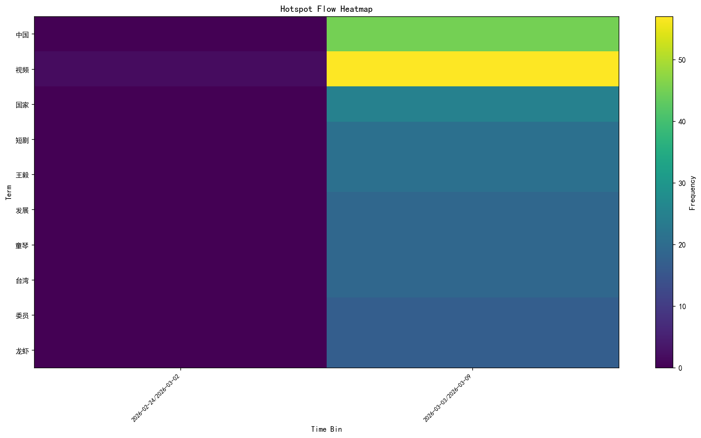

| time_bin | term | score | freq | lift | burst_z |
|---|---|---|---|---|---|
| 2026-03-03/2026-03-09 | 中国 | 59.234 | 45 | 46.00 | 45.0 |
| 2026-03-03/2026-03-09 | 视频 | 49.553 | 57 | 19.33 | 55.0 |
| 2026-03-03/2026-03-09 | 国家 | 35.484 | 25 | 26.00 | 25.0 |
| 2026-03-03/2026-03-09 | 王毅 | 30.619 | 21 | 22.00 | 21.0 |
| 2026-03-03/2026-03-09 | 短剧 | 30.619 | 21 | 22.00 | 21.0 |
| 2026-03-03/2026-03-09 | 童琴 | 28.161 | 19 | 20.00 | 19.0 |
| 2026-03-03/2026-03-09 | 发展 | 28.161 | 19 | 20.00 | 19.0 |
| 2026-03-03/2026-03-09 | 台湾 | 28.161 | 19 | 20.00 | 19.0 |
| 2026-03-03/2026-03-09 | 委员 | 25.682 | 17 | 18.00 | 17.0 |
| 2026-03-03/2026-03-09 | 龙虾 | 25.682 | 17 | 18.00 | 17.0 |
| 2026-02-24/2026-03-02 | 视频 | 3.617 | 2 | 3.00 | 2.0 |
| term | trend | peak_time_bin | peak_freq | total_freq |
|---|---|---|---|---|
| 视频 | rising | 2026-03-03/2026-03-09 | 57 | 59 |
| 中国 | new_or_sparse | 2026-03-03/2026-03-09 | 45 | 45 |
| 国家 | new_or_sparse | 2026-03-03/2026-03-09 | 25 | 25 |
| 短剧 | new_or_sparse | 2026-03-03/2026-03-09 | 21 | 21 |
| 王毅 | new_or_sparse | 2026-03-03/2026-03-09 | 21 | 21 |
| 发展 | new_or_sparse | 2026-03-03/2026-03-09 | 19 | 19 |
| 童琴 | new_or_sparse | 2026-03-03/2026-03-09 | 19 | 19 |
| 台湾 | new_or_sparse | 2026-03-03/2026-03-09 | 19 | 19 |
| 委员 | new_or_sparse | 2026-03-03/2026-03-09 | 17 | 17 |
| 龙虾 | new_or_sparse | 2026-03-03/2026-03-09 | 17 | 17 |